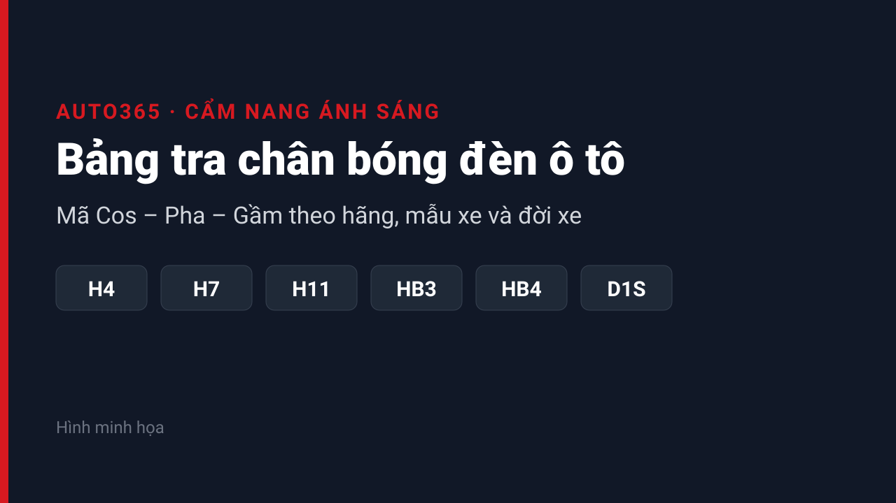
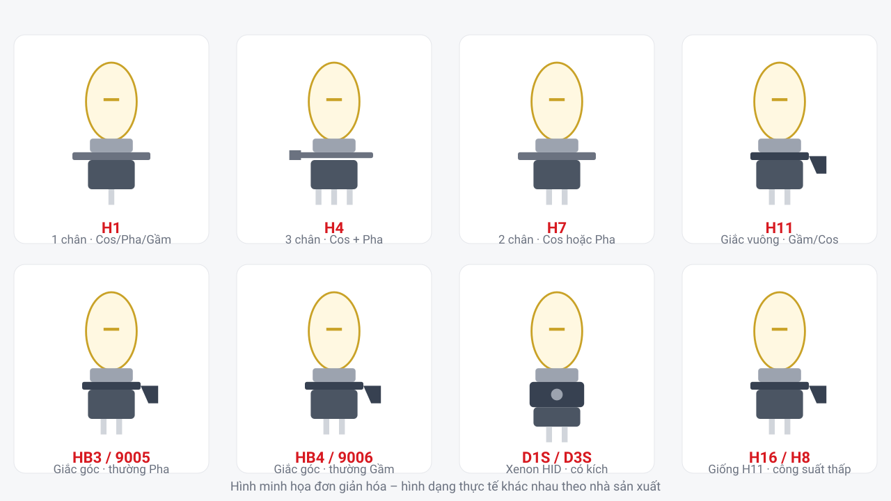
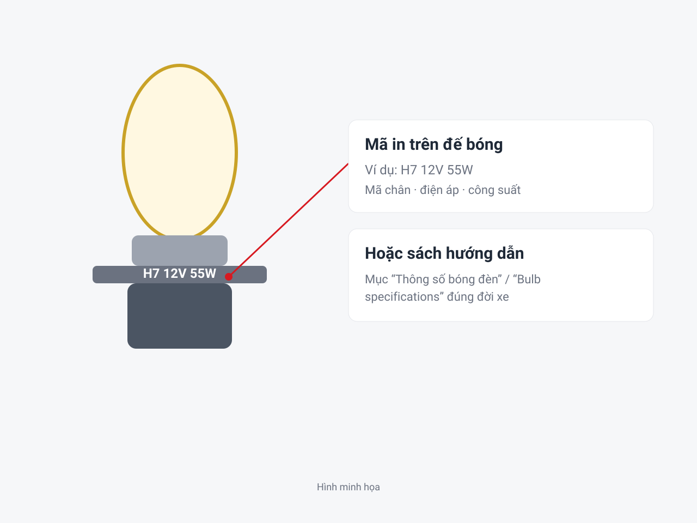
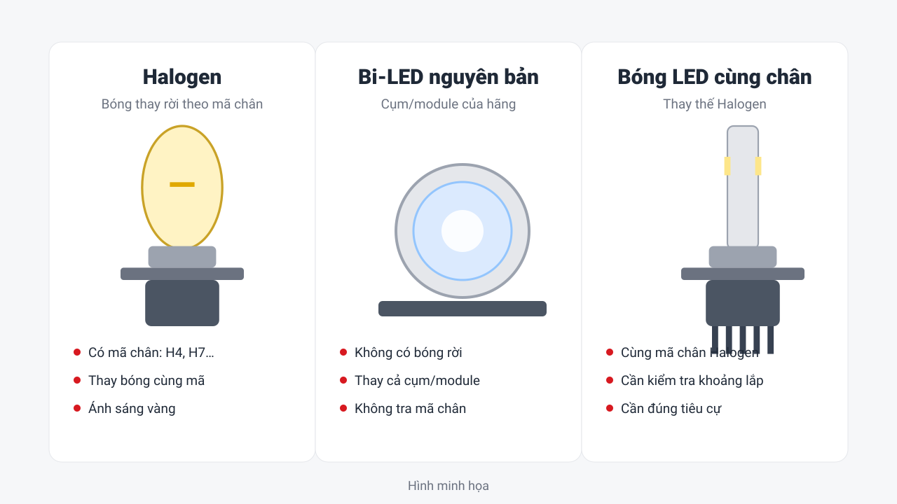

01
Tìm đúng dòng xe
Nhập hãng, mẫu xe hoặc năm sản xuất vào ô tìm kiếm. Nếu có nhiều đời hoặc loại đèn, chọn cấu hình gần nhất với xe đang dùng.
Cùng tên xe nhưng bản Halogen và bản LED có thể dùng mã bóng khác nhau.
AUTO365 · CẨM NANG ÁNH SÁNG
Tra cứu mã bóng đèn Cos, Pha và đèn gầm theo hãng, mẫu xe, năm sản xuất hoặc mã H4, H7, H11, HB3. Chọn xe trong bảng bên dưới, xem riêng từng cột Cos – Pha – Gầm và đối chiếu đúng đời, phiên bản, cụm đèn trước khi thay. Với đèn LED nguyên bản, cần kiểm tra loại cụm hoặc module thay vì suy ra mã bóng Halogen.


Các mã thường gặp gồm H1, H4, H7, H11, HB3 (9005), HB4 (9006) và nhóm Xenon D1S, D2S, D3S, D4S. Tùy đời xe, phiên bản và cụm đèn, vị trí Cos, Pha, Gầm có thể dùng các mã khác nhau.
TRA CỨU THEO HÃNG XE
Cách đọc: LED, LED Matrix, LED Projector… là cụm đèn nguyên bản, không có bóng thay rời. “Halogen / LED” là tùy phiên bản. “Có” ở cột Gầm là xe có đèn gầm nhưng chưa rõ mã bóng. Rê chuột vào dòng để xem nguồn.
| Dòng xe / đời xe | Chân Cos | Chân Pha | Đèn gầm |
|---|---|---|---|
| Audi A4 2009–2012 – Halogen | H7 | H7 | H11 |
| Audi A4 2013–2014 – Halogen | H7 | H7 | H8 |
| Audi A5 Quattro 2011–2012 – Halogen | H7 | H7 | H11 |
| Audi Q5 2009–2012 – Halogen | H7 | H7 | H11 |
| Audi Q5 2013–2017 – Halogen | H7 | H7 | H11 |
| Audi A6 2024 | LED Matrix | LED Matrix | — |
| Audi A7 2023 | LED | LED | Có |
| Audi A8 2022 | Matrix LED | Matrix LED | Không trang bị |
| Audi Q2 2023 | LED | LED | Có |
| Audi Q3 2023 | LED Matrix | LED Matrix | Có |
| Audi Q5 2024 | Matrix LED | Matrix LED | Có |
| Audi Q7 2024 | LED Matrix HD | LED Matrix HD | Có |
| Audi Q8 2024 | LED Matrix HD | LED Matrix HD | Có |
| Audi e-tron GT 2023 | LED | LED | Có |
| Audi Q5 SUV 2025 – Matrix LED | LED Matrix | LED Matrix | — |
| BMW 1 Series 2008 – Halogen | H7 | H7 | — |
| BMW 1 Series 2008–2011 | H7 | H7 | H11 |
| BMW 1 Series 2012–2013 | H7 | H7 | H8 |
| BMW 2 Series Coupe 2014–2016 | H7 | — | H8/H11 |
| BMW 230i 2017 | H7 | — | H8/H11 |
| BMW 3 Series | LED | LED | — |
| BMW 3 Series 2014–2016 | H7 | H7 | H8 |
| BMW 3 Series Coupe 2000–2006 | H7 | H7 | 9006 |
| BMW 3 Series Coupe 2007–2010 | — | — | H8 |
| BMW 3 Series Coupe 2011–2013 | — | — | H8/H11 |
| BMW 3 Series Sedan 2002–2006 | H7 | H7 | H11 |
| BMW 3 Series Sedan 2007–2008 | H7 | H7 | H11 |
| BMW 3 Series Sedan 2009 – Halogen | H7 | H7 | — |
| BMW 3 Series Sedan 2009–2013 | H7 | H7 | H8 |
| BMW 4 Series 2014–2016 | — | — | H8 |
| BMW 5 Series 2004–2007 | H7 | H7 | — |
| BMW 5 Series 2008–2010 | H7 | H7 | H8 |
| BMW 5 Series 2011–2013 | — | — | H8 |
| BMW 5 Series 2014–2016 – Xenon (F10) | D1S | — | LED |
| BMW 5 Series Sedan 2007 – Halogen | H7 | H7 | — |
| BMW 6 Series 2004–2007 | — | H7 | 9006 |
| BMW 6 Series 2008–2010 | — | H7 | H11 |
| BMW 6 Series 2012–2015 – Xenon | D1S | — | LED |
| BMW 7 Series 2002–2005 | — | H7 | H3 |
| BMW 7 Series 2006–2008 | — | H7 | 9006 |
| BMW 7 Series 2009–2012 | — | — | H8 |
| BMW 7 Series 2013–2015 – Xenon (F01/F02) | D1S | — | LED |
| BMW i3 2014–2017 | H7 | H11 | — |
| BMW M240i 2017 | H7 | — | H8/H11 |
| BMW M3 2002–2006 | H7 | H7 | 9006 |
| BMW M3 2008 | — | — | H11 |
| BMW M3 2012–2013 | — | — | H11 |
| BMW M5 2006–2007 | H7 | H7 | 9006 |
| BMW M5 2008–2010 | — | — | 9006 |
| BMW M5 2012–2016 | — | — | H11 |
| BMW M6 2006–2010 | — | H7 | — |
| BMW M6 2013–2014 – Xenon | D1S | — | LED |
| BMW X1 2012–2016 | H7 | H7 | H8 |
| BMW X3 2004–2006 | H7 | H7 | H11 |
| BMW X3 2007–2010 | H7 | H7 | H11 |
| BMW X3 2011–2014 | H7 | H7 | H8/H11 |
| BMW X3 2015–2016 | H7 | H7 | — |
| BMW X5 2002–2004 | H7 | 9005 | H11 |
| BMW X5 2005–2006 | H7 | H1 | H11 |
| BMW X5 2007–2008 | H7 | H1 | H11 |
| BMW X5 2009–2013 | H7 | H1 | H11 |
| BMW X5 2014–2016 – Xenon (F15) | D1S | — | LED |
| BMW X5 2014–2016 – LED (F15) | LED | LED | LED |
| BMW X6 2008–2012 | — | — | H11 |
| BMW X6 2013–2014 | — | — | H8/H11 |
| BMW Z4 2003–2008 | H7 | H7 | H11 |
| BYD ATTO 2 | LED | LED | — |
| BYD ATTO 3 | LED | LED | — |
| BYD HAN | LED | LED | — |
| BYD M6 | LED | LED | — |
| BYD SEAL 5 DM-i | LED | LED | — |
| Chevrolet Aveo 2004–2008 | H4 | — | 881 |
| Chevrolet Aveo 2009–2011 | H4 | — | H3 |
| Chevrolet Aveo-5 2005–2008 | H4 | — | 881 |
| Chevrolet Aveo-5 2009–2011 | H4 | — | H3 |
| Chevrolet Captiva 2015+, chưa khóa thị trường † | H1/H7Mã tham khảo · Chưa rõ vị trí Cos/Pha | H8 | |
| Chevrolet Captiva † | H1/H7Mã tham khảo · Chưa rõ vị trí Cos/Pha | H8 | |
| Chevrolet Cruze 2009–2015 † | H4 | H4 | H8 |
| Chevrolet Cruze 2016 LTZ có LED DRL † | 9005 (HB3)Mã tham khảo · Chưa rõ vị trí Cos/Pha | — | |
| Chevrolet Cruze 2016 LTZ không LED DRL † | H7/H15Mã tham khảo · Chưa rõ vị trí Cos/Pha | — | |
| Chevrolet Cruze 2017 † | HB3 projectorMã tham khảo · Chưa rõ vị trí Cos/Pha | — | |
| Chevrolet Cruze † | H4 | H4 | — |
| Chevrolet Gentra † | H4 | H4 | — |
| Chevrolet Lacetti † | H4 | H4 | H3 |
| Chevrolet Spark 2005–2012 † | H4 | H4 | H27W |
| Chevrolet Spark 2013–2015 † | H4 | H4 | H8 |
| Chevrolet Spark 2016–2019 † | H4 hoặc 9005Mã tham khảo · Chưa rõ vị trí Cos/Pha | — | |
| Chevrolet Vivan † | H4 | H4 | — |
| Ford EcoSport † | H4 | H4 | H11 |
| Ford Escape 2003 † | H4 | H4 | — |
| Ford Escape 2004–2011 † | HB3/HB4Mã tham khảo · Chưa rõ vị trí Cos/Pha | — | |
| Ford Escape 2007–2013 † | 9006/9005Mã tham khảo · Chưa rõ vị trí Cos/Pha | H3 | |
| Ford Everest 2008–2015, chóa phản xạ † | H4 hoặc H4/H7Mã tham khảo · Chưa rõ vị trí Cos/Pha | H11 | |
| Ford Everest 2016–2020 † | 9005/H7 hoặc 9005/D1SMã tham khảo · Chưa rõ vị trí Cos/Pha | — | |
| Ford Everest 2026 – Low Series | H7 | HB3 | H11 |
| Ford Everest 2026 – Mid/High Series | LED | LED | — |
| Ford Fiesta † | H1/H7Mã tham khảo · Chưa rõ vị trí Cos/Pha | H11 | |
| Ford Focus 2011–2014, chóa phản xạ † | H1/H7Mã tham khảo · Chưa rõ vị trí Cos/Pha | H11 | |
| Ford Focus † | H1/H7Mã tham khảo · Chưa rõ vị trí Cos/Pha | — | |
| Ford Mondeo sau 2014 † | HB3/H7Mã tham khảo · Chưa rõ vị trí Cos/Pha | — | |
| Ford Mondeo trước 2014 † | H1/H7Mã tham khảo · Chưa rõ vị trí Cos/Pha | — | |
| Ford Ranger 2015 – chóa phản xạ | H7 | H15 | H8 |
| Ford Ranger 2015 – projector | H11 | HB3 | H8 |
| Ford Ranger 2024 | Halogen / LED | Halogen / LED | Tùy phiên bản |
| Ford Ranger trước 2015 † | H4 | H4 | — |
| Ford Ranger Wildtrak † | H15/H11Mã tham khảo · Chưa rõ vị trí Cos/Pha | H11 | |
| Ford Ranger XLS sau 2015 † | HB3/H7Mã tham khảo · Chưa rõ vị trí Cos/Pha | H11 | |
| Ford Territory 2025 | LED | LED | Có |
| Ford Transit † | H4 | H4 | — |
| Geely Coolray 2025 | LED | LED | — |
| Geely EX2 2026 | LED | LED | — |
| Geely EX5 2025 | LED | LED | Có |
| Honda Accord † | HB3Mã tham khảo · Chưa rõ vị trí Cos/Pha | — | |
| Honda BR-V 2024 | LED | LED | Tùy phiên bản |
| Honda City 2013 Halogen † | H4 | H4 | H11 |
| Honda City 2013–2016 † | HB3/H7Mã tham khảo · Chưa rõ vị trí Cos/Pha | H11 | |
| Honda City 2014–2016 1.5 MT/CVT † | HB3/H11Mã tham khảo · Chưa rõ vị trí Cos/Pha | H11 | |
| Honda City 2021+ 1.5G/L Halogen † | HB3/H7Mã tham khảo · Chưa rõ vị trí Cos/Pha | H11 | |
| Honda City 2021+ RS † | LED | LED | — |
| Honda City trước 2013 † | H4 | H4 | — |
| Honda Civic 2018–2021 bản E † | H11/HB3Mã tham khảo · Chưa rõ vị trí Cos/Pha | H11 | |
| Honda Civic 2018–2021 bản G/RS † | LED | LED | H11 |
| Honda Civic † | HB3/HB4Mã tham khảo · Chưa rõ vị trí Cos/Pha | — | |
| Honda CR-V 2024 – bản G | LED | LED | Không trang bị |
| Honda CR-V 2024 – bản L / L AWD / e:HEV RS | LED | LED | LED |
| Honda CR-V † | HB3/D2SMã tham khảo · Chưa rõ vị trí Cos/Pha | — | |
| Honda HR-V 2024 | LED | LED | Có |
| Hyundai Accent Blue † | H4 | H4 | — |
| Hyundai Accent PE 2021 – MFR | H19 | H19 | HB4 |
| Hyundai Accent PE 2021 – Projector | HB3 | HB3 | HB4 |
| Hyundai All New Accent BN7 2024 – loại A | H7 | H7 | HB4 |
| Hyundai All New Accent BN7 2024 – loại B | LED | LED | HB4 |
| Hyundai Avante † | H4 | H4 | — |
| Hyundai Creta 2022 – loại A | HB3 | HB3 | — |
| Hyundai Creta 2022 – loại B | LED | LED | — |
| Hyundai Elantra 2024 | Halogen / LED | Halogen / LED | — |
| Hyundai Getz † | H4 | H4 | — |
| Hyundai Grand i10 2024 – loại B | HB3 | HB3 | — |
| Hyundai Grand i10 2024 – MFR | H19 | H19 | — |
| Hyundai Grand i10 AI3 2021 – loại A | H19 | H19 | — |
| Hyundai Grand i10 AI3 2021 – loại B | HB3 | HB3 | — |
| Hyundai i10 † | H4 | H4 | — |
| Hyundai i20 2008–2012 † | H4 | H4 | H27W |
| Hyundai i20 2013–2014 † | H7/H7Mã tham khảo · Chưa rõ vị trí Cos/Pha | H27W | |
| Hyundai i20 projector † | HB3 projectorMã tham khảo · Chưa rõ vị trí Cos/Pha | — | |
| Hyundai i30 † | H1/H7Mã tham khảo · Chưa rõ vị trí Cos/Pha | — | |
| Hyundai New Creta 2025 – loại A | HB3 | HB3 | — |
| Hyundai New Creta 2025 – loại B | LED | LED | — |
| Hyundai Palisade 2024 | LED Projector | LED Projector | — |
| Hyundai Santa Fe 2010–2011 Bi Halo † | H7/H7Mã tham khảo · Chưa rõ vị trí Cos/Pha | H27W | |
| Hyundai Santa Fe 2012–2015 Bi Xenon † | D3S/H7Mã tham khảo · Chưa rõ vị trí Cos/Pha | H8 | |
| Hyundai Santa Fe 2019–2020 Bi Halo † | HB3/HB3Mã tham khảo · Chưa rõ vị trí Cos/Pha | H8 | |
| Hyundai Santa Fe 2025 | LED Projector | LED Projector | Có |
| Hyundai Santa Fe † | H7/H7Mã tham khảo · Chưa rõ vị trí Cos/Pha | — | |
| Hyundai Sonata 2010–2013 2.0 AT † | H7/H7Mã tham khảo · Chưa rõ vị trí Cos/Pha | H8 | |
| Hyundai Sonata 2014–2017 Bi Halo † | HB3/HB3Mã tham khảo · Chưa rõ vị trí Cos/Pha | 881/H8 | |
| Hyundai Stargazer 2025 | LED | LED | Tùy phiên bản |
| Hyundai Tucson 2010–2013 xăng † | H4 | H4 | H27W |
| Hyundai Tucson 2014–2015 2.0 1 Bi † | HIR2Mã tham khảo · Chưa rõ vị trí Cos/Pha | H27W | |
| Hyundai Tucson 2019–2021 bảng tổng hợp † | LED | LED | H8 |
| Hyundai Tucson 2025 | LED | LED | Có |
| Hyundai Tucson † | H4 | H4 | — |
| Hyundai Venue 2024 | Bi-Halogen / Bi-LED | Bi-Halogen / Bi-LED | Có |
| Hyundai Veracruz † | H7/H7Mã tham khảo · Chưa rõ vị trí Cos/Pha | — | |
| Isuzu D-Max 2006–2010 chóa phản xạ † | H4 | H4 | H3 |
| Isuzu D-Max 2006–2010 projector Halogen † | H7/HB3Mã tham khảo · Chưa rõ vị trí Cos/Pha | H3 | |
| Isuzu D-Max 2008 † | HB3/H7Mã tham khảo · Chưa rõ vị trí Cos/Pha | — | |
| Isuzu D-Max 2011–2018 projector Halogen † | H11/HB3Mã tham khảo · Chưa rõ vị trí Cos/Pha | H3 | |
| Isuzu Hi-Lander † | H4 | H4 | — |
| Isuzu mu-X 2014–2021 bản tham khảo † | H11/HB3Mã tham khảo · Chưa rõ vị trí Cos/Pha | LED | |
| Isuzu mu-X 2022+ bản LED † | LED | LED | LED |
| Isuzu Trooper † | H4 | H4 | — |
| Jaecoo J7 2025 | LED Projector | LED Projector | Có |
| Kia Carens 2025 | Halogen / LED | Halogen / LED | Tùy phiên bản |
| Kia Carens † | H1/H7Mã tham khảo · Chưa rõ vị trí Cos/Pha | — | |
| Kia Carnival 2025 | LED | LED | Có |
| Kia Carnival † | H1/H7Mã tham khảo · Chưa rõ vị trí Cos/Pha | — | |
| Kia Cerato / Forte † | H1/H7Mã tham khảo · Chưa rõ vị trí Cos/Pha | — | |
| Kia Cerato / K3 2017–2018 có Bi † | H7/9005Mã tham khảo · Chưa rõ vị trí Cos/Pha | 881 | |
| Kia Cerato 2016 † | H7/H7Mã tham khảo · Chưa rõ vị trí Cos/Pha | H11 | |
| Kia K3 2024 | Halogen / LED | Halogen / LED | Có |
| Kia Morning / Picanto projector † | H7 projectorMã tham khảo · Chưa rõ vị trí Cos/Pha | — | |
| Kia Morning Bản thiếu † | H4 | H4 | 881/9005 |
| Kia Morning † | H4 | H4 | — |
| Kia New Seltos | LED | LED | — |
| Kia New Sonet 2025 – Luxury | LED | LED | — |
| Kia New Sonet 2025 – Premium | LED | LED | LED |
| Kia Optima / K5 † | H1/H7Mã tham khảo · Chưa rõ vị trí Cos/Pha | — | |
| Kia Optima/K5 2014–2015 † | H1/H11Mã tham khảo · Chưa rõ vị trí Cos/Pha | H8LL | |
| Kia Pride † | H4 | H4 | 881 |
| Kia Rio projector † | H7 projectorMã tham khảo · Chưa rõ vị trí Cos/Pha | — | |
| Kia Rio Sedan † | H4 | H4 | 9005 |
| Kia Sedona 2015–2018 † | H7/H7Mã tham khảo · Chưa rõ vị trí Cos/Pha | H8 | |
| Kia Seltos 2025 | Halogen / LED | Halogen / LED | Có |
| Kia Soluto 2024 | Halogen | Halogen | Có |
| Kia Sorento 2006–2010 † | H1/H7Mã tham khảo · Chưa rõ vị trí Cos/Pha | H27W | |
| Kia Sorento 2014–2015 † | H7/H7Mã tham khảo · Chưa rõ vị trí Cos/Pha | 881 | |
| Kia Sorento 2019–2020 † | 9005/H7Mã tham khảo · Chưa rõ vị trí Cos/Pha | — | |
| Kia Sorento † | H1/D1SMã tham khảo · Chưa rõ vị trí Cos/Pha | H8 | |
| Lexus ES 2024 | Full LED | Full LED | Có |
| Lexus LS 2024 | 3H LED | 3H LED | Có |
| Lexus NX 2024 | 3H LED | 3H LED | Có |
| Lexus RX 2024 | LED | LED | Có |
| Lexus GX 2024 | LED | LED | Có |
| Lexus LX 2024 | LED | LED | Có |
| Lexus LM 2024 | LED Projector | LED Projector | — |
| Lexus RX350 2007–2009 – Halogen | H11 | HB3 (9005) | HB4 (9006) |
| Lexus RX350 2010–2013 – Halogen | H11 | HB3 (9005) | H11 |
| Lexus RX350 2014–2015 – Halogen | H11 | HB3 (9005) | H16 |
| Lexus IS250/IS350 2006–2010 – Halogen | H11 | HB3 (9005) | HB4 (9006) |
| Lexus IS250/IS350 2011–2013 – Halogen | H11 | HB3 (9005) | H11 |
| Lexus LX570 2008–2011 – Halogen | H11 | HB3 (9005) | H11 |
| Lexus LX470 1999–2007 – Halogen | H1 | HB3 (9005) | H3 |
| Lexus GX470 2003–2008 – Halogen, Bắc Mỹ | H11 | HB3 (9005) | H3 |
| Mazda BT-50 2024 | LED | LED | Có |
| Mazda CX-3 2016–2019 Deluxe † | H11/HB3Mã tham khảo · Chưa rõ vị trí Cos/Pha | — | |
| Mazda CX-30 Luxury/Premium | LED | LED | — |
| Mazda CX-5 | LED | LED | — |
| Mazda CX-5 2013–2014 Bi Halo † | H11/HB3Mã tham khảo · Chưa rõ vị trí Cos/Pha | H11 | |
| Mazda CX-5 2014–2016 Bi Halo † | H11/H15Mã tham khảo · Chưa rõ vị trí Cos/Pha | H11 | |
| Mazda CX-5 2023 | LED | LED | — |
| Mazda CX-8 | LED | LED | — |
| Mazda Mazda2 2010–2011 † | H4 | H4 | H11 |
| Mazda Mazda2 2024 | Halogen / LED | Halogen / LED | — |
| Mazda Mazda2 † | H4 | H4 | — |
| Mazda Mazda3 2011–2014 † | HB3/H11Mã tham khảo · Chưa rõ vị trí Cos/Pha | H11 | |
| Mazda Mazda3 2015–2020 † | H15/H11Mã tham khảo · Chưa rõ vị trí Cos/Pha | H11 | |
| Mazda Mazda3 2024 | LED Projector | LED Projector | Tùy phiên bản |
| Mazda Mazda3 Sedan | LED | LED | — |
| Mazda Mazda6 2013–2015 Bi Xenon † | D4SMã tham khảo · Chưa rõ vị trí Cos/Pha | H11 | |
| Mazda Premacy † | H4 | H4 | 811 |
| Mercedes-Benz C-Class 2024 | LED High Performance | LED High Performance | Có |
| Mercedes-Benz E-Class 2024 | Full LED | Full LED | — |
| Mercedes-Benz S-Class 2024 | LED Digital Light | LED Digital Light | Không trang bị |
| Mercedes-Benz GLB 2024 | Full LED | Full LED | — |
| Mercedes-Benz GLC 2023 | LED toàn phần | LED toàn phần | Không trang bị |
| Mercedes-Benz GLE 2024 | Multibeam LED | Multibeam LED | — |
| Mercedes-Benz GLS 2024 | Multibeam LED | Multibeam LED | Có |
| Mercedes-Benz G-Class 2024 | Multibeam LED | Multibeam LED | Có |
| Mercedes-Benz V-Class 2024 | LED toàn phần | LED toàn phần | — |
| Mercedes-Benz EQS 2024 | LED Digital Light | LED Digital Light | — |
| Mercedes-Benz EQE SUV 500 4MATIC 2024 | Multibeam LED Digital Light | Multibeam LED Digital Light | — |
| Mercedes-Benz C-Class W204 2007–2014 – Halogen | H7 | H7 | — |
| Mercedes-Benz A-Class W176 2012–2018 – Halogen | H7 | — | — |
| MG HS 2025 | HB3SL+Mã tham khảo · Chưa rõ vị trí Cos/Pha | H8 | |
| MG MG5 2025 | LED | LED | — |
| MG ZS 2025 | LED | LED | H8 |
| Mitsubishi Triton 2024 | Halogen / LED Projector | Halogen / LED Projector | Có |
| Mitsubishi Attrage 2024 | Halogen / LED | Halogen / LED | Tùy phiên bản |
| Mitsubishi Destinator Premium 2025 | LED | LED | Có |
| Mitsubishi Destinator Ultimate 2025 | LED | LED | Có |
| Mitsubishi Grandis † | H9/H11Mã tham khảo · Chưa rõ vị trí Cos/Pha | — | |
| Mitsubishi Jolie † | H4 | H4 | — |
| Mitsubishi Lancer † | H4 | H4 | — |
| Mitsubishi Outlander 2014–2015 Bi Xenon † | D4S/HB3Mã tham khảo · Chưa rõ vị trí Cos/Pha | H8 | |
| Mitsubishi Outlander 2014–2015 chóa Halo † | H7/HB3Mã tham khảo · Chưa rõ vị trí Cos/Pha | H8 | |
| Mitsubishi Outlander 2016–2019 Bi Halo † | H7/HB3Mã tham khảo · Chưa rõ vị trí Cos/Pha | H16 | |
| Mitsubishi Pajero 2000–2002 † | H4 | H4 | H3 |
| Mitsubishi Pajero 2003–2006 † | H4 | H4 | HB4 |
| Mitsubishi Pajero 2010–2014 Bi Halo † | H11/HB3Mã tham khảo · Chưa rõ vị trí Cos/Pha | H11 | |
| Mitsubishi Pajero Sport † | HB3/H11Mã tham khảo · Chưa rõ vị trí Cos/Pha | — | |
| Mitsubishi Pajero † | H4 | H4 | — |
| Mitsubishi Triton † | H4 | H4 | — |
| Mitsubishi Xforce (LED T-Shape) | LED | LED | — |
| Mitsubishi Xpander 2025 | Halogen / LED Projector | Halogen / LED Projector | Tùy phiên bản |
| Mitsubishi Xpander mới (LED T-Shape) | LED | LED | — |
| Mitsubishi Zinger † | H4 | H4 | — |
| Nissan Almera 2024 | Halogen / LED | Halogen / LED | Tùy phiên bản |
| Nissan Kicks e-POWER 2024 | LED | LED | Tùy phiên bản |
| Nissan Navara 2024 | Halogen / Quad-LED | Halogen / Quad-LED | Tùy phiên bản |
| Omoda C5 | LED | LED | — |
| Peugeot 2008 2024 | LED | LED | Có |
| Peugeot 3008 2024 | LED | LED | Có |
| Peugeot 5008 2024 | LED Projector | LED Projector | Không trang bị |
| Skoda Karoq 2025 | LED Matrix | LED Matrix | Có |
| Skoda Kodiaq 2025 | LED Matrix | LED Matrix | — |
| Skoda Kushaq 2025 | LED | LED | Có |
| Subaru Crosstrek 2024 | LED | LED | Có |
| Subaru Forester 2025 | LED | LED | Có |
| Suzuki Ertiga 2023 | Halogen Projector | Halogen Projector | Tùy phiên bản |
| Suzuki Swift 2008–2017 † | H4 | H4 | H11 |
| Suzuki Swift 2018+ GL † | H4 | H4 | H11 |
| Suzuki Swift 2018+ GLX † | LED | LED | — |
| Suzuki Swift † | H4 | H4 | — |
| Suzuki Vitara 2015 † | H7/HB3Mã tham khảo · Chưa rõ vị trí Cos/Pha | — | |
| Suzuki Wagon † | H4 | H4 | — |
| Suzuki XL7 2024 | LED Projector | LED Projector | Có |
| Toyota Altis 2014 trở lên † | HB3/H11Mã tham khảo · Chưa rõ vị trí Cos/Pha | H16 | |
| Toyota Altis đời cũ † | HB3/HB4Mã tham khảo · Chưa rõ vị trí Cos/Pha | 881 | |
| Toyota Avanza 2007–2015 † | H4 | H4 | H11 |
| Toyota Avanza Premio CVT | LED | LED | Halogen |
| Toyota Avanza Premio MT | LED | LED | Halogen |
| Toyota Camry 2022 | LED | LED | — |
| Toyota Camry † | HB3/H7Mã tham khảo · Chưa rõ vị trí Cos/Pha | H11 | |
| Toyota Corolla Altis | LED | LED | — |
| Toyota Corolla Cross 1.8HEV | LED | LED | LED |
| Toyota Fortuner 2008–2015, các bản liệt kê † | 9005/H11Mã tham khảo · Chưa rõ vị trí Cos/Pha | H11 | |
| Toyota Fortuner 2012–2016 † | HB3/H11Mã tham khảo · Chưa rõ vị trí Cos/Pha | HB3 | |
| Toyota Fortuner 2016–2019, chóa phản xạ † | 9005/9012Mã tham khảo · Chưa rõ vị trí Cos/Pha | H11 | |
| Toyota Fortuner 2016–2019, có bi † | LED | LED | H11 |
| Toyota Fortuner 2025 | LED | LED | Có |
| Toyota Fortuner † | HB3/HB4Mã tham khảo · Chưa rõ vị trí Cos/Pha | HB3 | |
| Toyota Hilux 2026 | LED | LED | — |
| Toyota Hilux † | H4 | H4 | H11 |
| Toyota Innova 2015–2017 † | HB3/H7Mã tham khảo · Chưa rõ vị trí Cos/Pha | H11 | |
| Toyota Innova Cross 2024 | Halogen / LED | Halogen / LED | Có |
| Toyota Innova Cross 2.0HEV | LED | LED | — |
| Toyota Innova † | H4 | H4 | H11 |
| Toyota Land Cruiser 2024 | LED | LED | Có |
| Toyota Land Cruiser † | HB3/HB4Mã tham khảo · Chưa rõ vị trí Cos/Pha | H11 | |
| Toyota Prado Trước 2010 † | H4 | H4 | H11 |
| Toyota Prado từ 2014 † | HB3/H11Mã tham khảo · Chưa rõ vị trí Cos/Pha | — | |
| Toyota Prado † | H4 | H4 | — |
| Toyota Sienna † | H4 | H4 | — |
| Toyota Veloz Cross CVT | LED | LED | Halogen |
| Toyota Veloz Cross CVT Top | LED | LED | Halogen |
| Toyota Venza † | HB3/H11Mã tham khảo · Chưa rõ vị trí Cos/Pha | H11 | |
| Toyota Vios 2019 † | HB4/H11Mã tham khảo · Chưa rõ vị trí Cos/Pha | H11 | |
| Toyota Vios 2024 | LED | LED | — |
| Toyota Vios G 2014–2016 † | 9012Mã tham khảo · Chưa rõ vị trí Cos/Pha | H11 | |
| Toyota Vios † | H4 | H4 | H11 |
| Toyota Wigo 1.2G CVT (thế hệ 2023+) | LED | LED | — |
| Toyota Yaris Cross | LED | LED | — |
| Toyota Yaris G từ 2014 † | 9012Mã tham khảo · Chưa rõ vị trí Cos/Pha | H11 | |
| Toyota Yaris † | H4 | H4 | H11 |
| Toyota Zace † | H4 | H4 | 881 |
| VinFast EC Van (Halogen) | Halogen | Halogen | — |
| VinFast Fadil – Halogen | H4 | H4 | — |
| VinFast Herio Green (Halogen Projector) | Halogen | Halogen | — |
| VinFast Limo Green (LED Projector) | LED | LED | — |
| VinFast Lux A2.0 | — | — | LED |
| VinFast Minio Green – Projector | LED | LED | — |
| VinFast VF 2 2026 | LED | LED | — |
| VinFast VF 3 | H7Halogen · theo case lắp đặt Auto365 | — | |
| VinFast VF 5 Plus (Halogen Projector) | H7 | H7 | — |
| VinFast VF 6 Plus | LED | LED | — |
| VinFast VF 7 | LED | LED | — |
| VinFast VF 8 Eco/Plus | LED | LED | — |
| VinFast VF 9 (Full LED Matrix) | LED | LED | — |
| VinFast VF e34 | LED | LED | — |
| Volkswagen Tiguan 2025 | LED Matrix IQ.Light | LED Matrix IQ.Light | Có |
| Volkswagen Teramont 2025 | LED / IQ.Light LED Matrix | LED / IQ.Light LED Matrix | Có |
| Volkswagen Touareg 2024 | IQ.Light LED / HD Matrix | IQ.Light LED / HD Matrix | Có |
| Volkswagen Viloran 2025 | IQ.Light LED / LED | IQ.Light LED / LED | Có |
| Volkswagen Golf V 2003–2008 – Halogen | H7 | — | — |
| Volkswagen Golf VI 2008–2012 – Halogen | H7 | — | — |
| Volkswagen Golf VII 2012–2017 – Halogen | H7 | — | — |
| Volkswagen Polo V 6R 2008–2014 – Halogen H4 | H4 | H4 | — |
| Volkswagen Polo V 6C 2018 – Halogen | H7 | — | — |
| Volkswagen Passat B6 2005–2010 – Halogen | H7 | — | — |
| Volkswagen Passat B7 2010–2014 – Halogen | H7 | — | — |
| Volkswagen Tiguan I facelift 2011–2016 – Halogen | H7 | — | — |
Không tìm thấy dòng xe phù hợp. Hãy thử tên xe hoặc đời xe khác.
Lưu ý: Các cặp mã nằm chung ô Cos/Pha chỉ là mã tham khảo, chưa xác định bóng nào dùng cho từng vị trí. “—” là vị trí chưa có dữ liệu xác định, không có nghĩa xe không trang bị đèn. Nên mang xe đến Auto365 để kỹ thuật viên kiểm tra và tư vấn trước khi thay hoặc nâng cấp đèn.
Các cấu hình Audi Halogen ghi “Bắc Mỹ” được đối chiếu từ catalog Philips 2002–2022; không mặc định tương thích với mọi phiên bản đang lưu hành ở Việt Nam.
CẨM NANG THỰC HÀNH

Bảng trên giúp khoanh vùng mã bóng theo xe, nhưng kết quả cuối cùng còn phụ thuộc năm sản xuất, phiên bản và cụm đèn thực tế. Hãy làm theo ba bước dưới đây để biết mã nào cần kiểm tra, vì sao có kết quả khác nhau và khi nào nên nhờ kỹ thuật viên hỗ trợ.
Nhập hãng, mẫu xe hoặc năm sản xuất vào ô tìm kiếm. Nếu có nhiều đời hoặc loại đèn, chọn cấu hình gần nhất với xe đang dùng.
Cùng tên xe nhưng bản Halogen và bản LED có thể dùng mã bóng khác nhau.
Xem từng vị trí đèn cần thay. Ô Cos/Pha gộp chung là cặp mã tham khảo, chưa xác định mã nào cho Cos, mã nào cho Pha.
Dấu “—” là chưa có mã tin cậy, không có nghĩa xe không có đèn ở vị trí đó.
Đối chiếu sách hướng dẫn, mã in trên đế bóng và cụm đèn. Kiểm tra thêm giắc cắm, khoảng lắp và điện áp trước khi mua bóng.
Vị trí khó tháo nên để kỹ thuật viên kiểm tra, tránh làm hỏng cụm đèn.
Sự khác biệt thường đến từ đời xe, phiên bản trang bị, thị trường phân phối, cụm đèn đã thay trước đó hoặc công nghệ nguồn sáng. Đây là lý do không nên dùng một mã cho tất cả xe cùng tên.

Xe trước/sau nâng cấp thiết kế hoặc khác cấp trang bị có thể dùng bóng, giắc và đèn gầm khác nhau.
Halogen thường có bóng thay rời. Xenon HID cần đúng nhóm bóng và bộ điều khiển. LED OEM có thể dùng module hoặc cụm đèn riêng.
Đèn từng được nâng cấp hoặc thay thế có thể không còn dùng mã giống cụm đèn xuất xưởng.
Mã H4, H7, H11, HB3/9005 hoặc D2S giúp xác định nhóm bóng và kiểu lắp. Các thông số W, lm, cd và K lại mô tả những đặc tính khác; không nên dựa vào một con số để kết luận bóng phù hợp.
Nhóm bóng và kiểu kết nối tương ứng; cần khớp vị trí đèn.
Mức công suất điện danh định; không đồng nghĩa trực tiếp với độ sáng thực tế.
Lượng ánh sáng phát ra của nguồn sáng, không tự phản ánh đường sáng trên mặt đường.
Cường độ theo hướng đo xác định, khác với quang thông tổng.
Thể hiện sắc thái ánh sáng; không phải chỉ số công suất hay độ sáng.
Quang thông trên công suất điện tiêu thụ trong điều kiện đo xác định.
GIẢI ĐÁP THƯỜNG GẶP
Có. Mã bóng có thể đổi theo đời xe, phiên bản, thị trường và loại cụm đèn. Một xe có thể dùng bóng Cos và Pha khác nhau.
H7 là mã loại bóng, không cố định chỉ dành cho Cos hoặc Pha. Vị trí thực tế do thiết kế hệ thống đèn của từng xe quyết định.
Nhiều cấu hình Halogen H4 tích hợp hai chức năng trong một bóng. Tuy nhiên vẫn phải kiểm tra xe có dùng H4 nguyên bản hay không.
Không thể suy ra như vậy. Bi-LED mô tả cấu tạo cụm đèn; muốn thay bộ phận cần tra mã module/cụm đèn đúng xe, thay vì tự gán một mã bóng Halogen.
Chỉ khớp chân bóng chưa đủ. Cần kiểm tra hệ thống điện, không gian, tản nhiệt, phân bổ ánh sáng và quy định liên quan trước khi thực hiện.
HỖ TRỢ KIỂM TRA ĐÈN
Nếu bảng có nhiều cấu hình hoặc không tìm thấy mã phù hợp, có thể mang xe đến Auto365.vn - Trụ Sở Chính để được kiểm tra loại cụm đèn thực tế trước khi cân nhắc thay hoặc nâng cấp.
Địa chỉ: Số 4/4/1/7 Đường số 3, Phường Hiệp Bình, TP. Hồ Chí Minh. Hotline: 0365 365 911.
Đã tra được mã chân trên xe, xem bóng LED cùng mã bên dưới. Xe dùng cụm LED nguyên bản không thay được bóng rời.
Xem tất cả bóng LED theo chân · Chân đèn H4 dùng cho dòng xe nào
XE THỰC TẾ
Một số xe đã được kỹ thuật viên Auto365 kiểm tra chân bóng và lắp đặt thực tế. Mỗi bài ghi rõ dòng xe, mã chân bóng và sản phẩm sử dụng.
 Chevrolet Captiva 2008Chevrolet Captiva 2008 lắp bóng LED S6 Pro V212/11/2026
Chevrolet Captiva 2008Chevrolet Captiva 2008 lắp bóng LED S6 Pro V212/11/2026 Toyota Corolla Cross 2023Toyota Corolla Cross 2023 1.8G lắp bóng LED V12 Hyper 36005/10/2026
Toyota Corolla Cross 2023Toyota Corolla Cross 2023 1.8G lắp bóng LED V12 Hyper 36005/10/2026 VinFast VF5VinFast VF5 nâng cấp bóng LED X-Light S6 Pro V216/07/2026
VinFast VF5VinFast VF5 nâng cấp bóng LED X-Light S6 Pro V216/07/2026 VinFast VF3Bóng LED VinFast VF3: X-Light S9 Pro chân H712/03/2025
VinFast VF3Bóng LED VinFast VF3: X-Light S9 Pro chân H712/03/2025 VinFast VF3Bóng LED VinFast VF3: X-Light S6 Pro chân H711/03/2025
VinFast VF3Bóng LED VinFast VF3: X-Light S6 Pro chân H711/03/2025 Hyundai Santa FeHyundai Santa Fe độ đèn X-Light S9 Pro và V30 Ultra01/08/2024
Hyundai Santa FeHyundai Santa Fe độ đèn X-Light S9 Pro và V30 Ultra01/08/2024Bảng tra Auto365 tổng hợp từ tài liệu hướng dẫn sử dụng, catalog kỹ thuật theo đời xe, dữ liệu đối chiếu lịch sử và thông tin do đội ngũ biên tập tổng hợp. Với xe thuộc thị trường nước ngoài, phạm vi thị trường được ghi trong tên cấu hình khi có đủ căn cứ.
Các tài liệu từ nhà sản xuất và catalog tham khảo được lưu để bộ phận chuyên môn đối chiếu. Người đọc có thể tra cứu trực tiếp trên trang này, hoặc liên hệ Auto365 khi cần kiểm tra mã bóng của đúng chiếc xe.
Thông tin tổng hợp chỉ hỗ trợ xác định mã ban đầu; việc kiểm tra trên xe thực tế vẫn cần thiết trước khi thay thế.